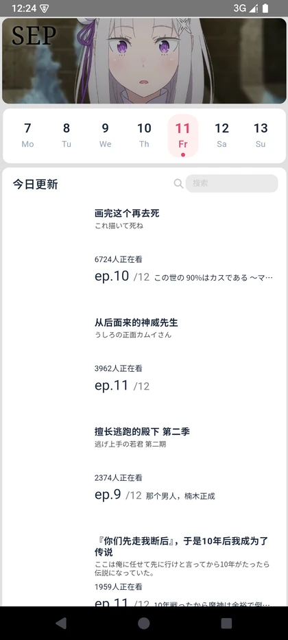
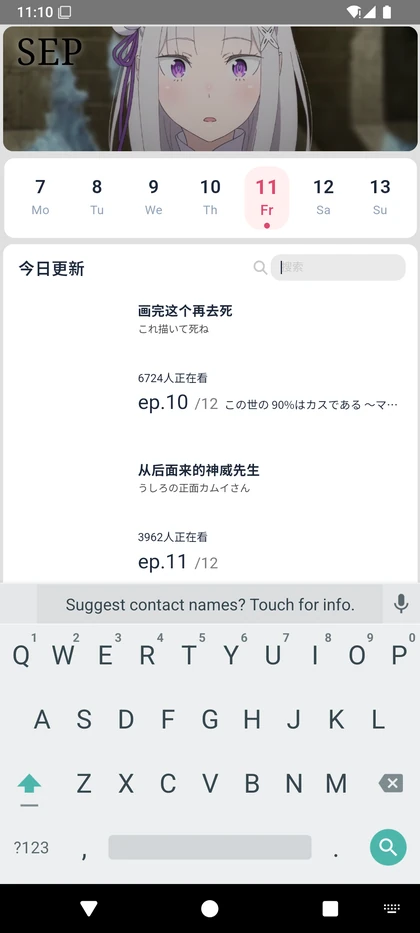
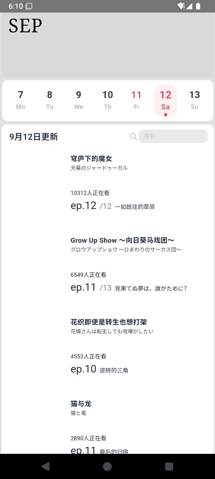
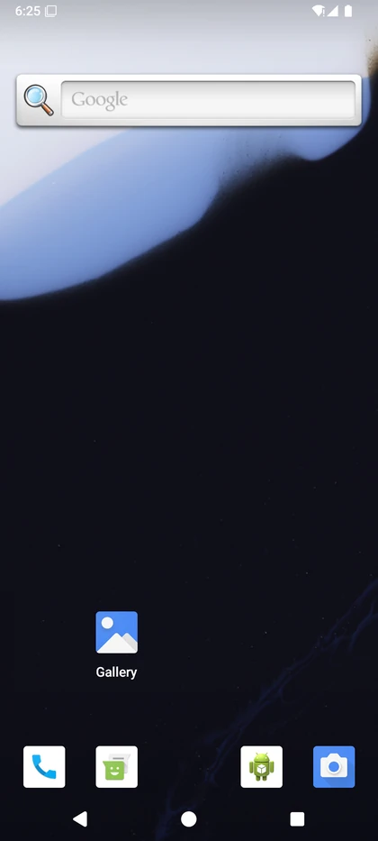
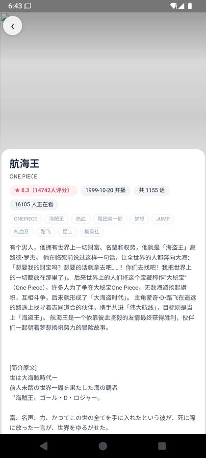
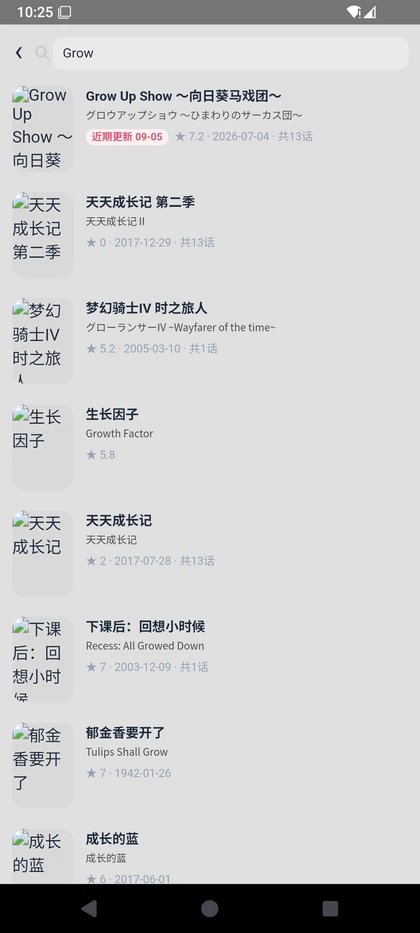
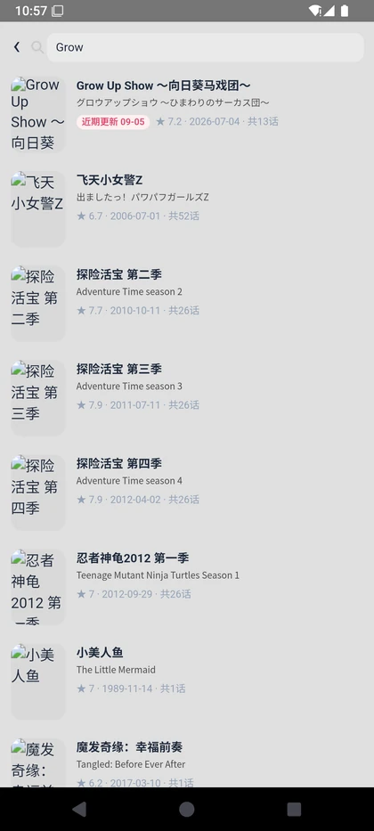
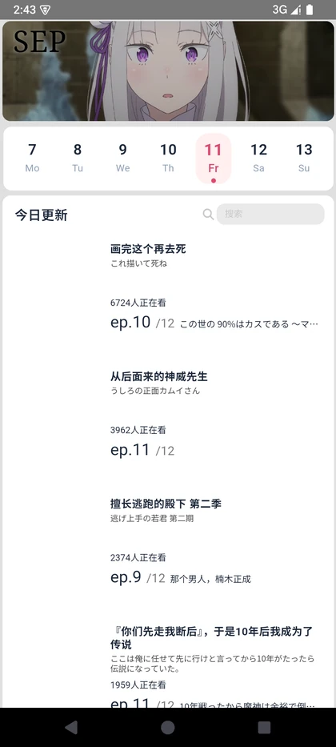

一个"查今天更新了哪些番"的小工具，真正的工程量在数据可靠性上： 本地服务最快最全 → 直连官方 API 保证手机单独可用 → 离线快照兜底保证永远不白屏。 三级自动回退做完之后，这个 App 才敢直接发给别人安装。
01 一句话说清
独立完成一款 Android 「新番更新日历」应用：移动端 H5 界面 + Capacitor 打包为 APK， 数据全部来自 Bangumi 官方 API，含本地数据服务与每日自动刷新。
| 交付物 | 说明 |
|---|---|
| 可安装 APK | 约 6.9 MB，覆盖安装即可用，支持 Android 5.0+ |
| 本地数据服务 | Node.js 零依赖，端口 8787：透传官方 API + 缓存 + 归一化 |
| 每日全量刷新 | 每日 02:00 由 Windows 任务计划程序触发，含服务登录自启 |
| 数据规模 | 111 部在播番剧 ×（详情 + 全量剧集与播出日期） |
| 界面还原 | 按 Figma 设计稿实现，配色 / 尺寸 / 圆角逐项核对 |
02 应用截图
下列截图全部来自真机模拟器实机运行，非设计稿。








03 技术方案
| 层级 | 选型与说明 |
|---|---|
| 前端 | 原生 HTML / CSS / JavaScript（移动端 H5，无框架、零构建步骤）；横向分页滑动日历（CSS scroll-snap）、Canvas 视频末帧定格、hash 路由 |
| 打包 | Capacitor 6 → Android 工程（Gradle 8.2.1 / AGP 8.2.1 / JDK 17 / compileSdk 34） |
| 后端 | Node.js 零依赖 HTTP 服务；Bangumi API 客户端 + 归一化 + 多级缓存 |
| 自动化 | Windows 任务计划程序（每日 2:00 刷新）、登录自启常驻服务、访问日志（含 HTTP 状态码） |
| 环境 | Android SDK（platform-tools / emulator / platform-35 / build-tools）、AVD（Android 15 x86_64）、模拟器 WHPX 硬件加速 |
这个 App 的页面数量少、交互清晰，引入框架带来的构建链路与调试成本大于收益。 零构建步骤意味着改一行代码刷新浏览器就能看到结果，也让 Capacitor 打包时几乎没有额外变量—— 排查"浏览器里正常、APK 里失败"这类问题时，可以把嫌疑范围收窄到容器层而不是构建产物。
04 三级数据源自动回退
App 不依赖电脑也能用。启动时按优先级自动选择数据源：
| 优先级 | 模式 | 说明 |
|---|---|---|
| 1 | 本地数据服务 | 并行探测：同源 / 10.0.2.2:8787（模拟器）/ 内网 IP（真机同 Wi-Fi）/ 127.0.0.1。数据最全最快，含服务端排序与补查 |
| 2 | 直连官方 API | APK 内走 CapacitorHttp 原生请求（可带 UA、不受 CORS 限制）；浏览器走 fetch。日历 / 剧集 / 搜索结果本地缓存（12h / 6h / 60s），手机有网就能用，可分享给别人 |
| 3 | 离线快照 | 完全离线时退回随包快照（111 部在播番），界面提示并可点击重试，每 20 秒自动重试回到在线 |
开发期最容易被忽略的问题是：我的开发环境是"最好情况"，用户的手机是"最坏情况"。 我本地永远开着数据服务，所以一切正常；但把 APK 发给别人，对方手机上没有服务、可能在公司网络、可能地铁里没信号—— 三个降级层级分别对应"有电脑""有网""连网都没有"，确保任何一层失败都不会让用户看到白屏。
05 搜索是怎么做的
搜索看起来是最简单的功能，实际是这个项目投入最多的地方。
查得全：双接口合并去重
并行查询官方两套搜索接口（v0 与旧版）并按 id 合并去重，扩大覆盖范围：v0 接口相关度好、字段全； 旧接口匹配宽松、覆盖全。
排得准：三级排序
| 层级 | 规则 |
|---|---|
| 标题匹配级 级别高的在前 | 2 — 标题含完整关键词（连续整词，中/日文名任一） |
| 1 — 多词查询时命中其中任一词 | |
| 0 — 仅别名 / 标签命中 | |
| 同级别内 | 最近更新优先（按最近播出日倒序）→ 热度（在看人数 → 评分人数）→ 标题更短者优先 |
「最近更新」只统计已播出的剧集（排除未来话数），命中结果带「近期更新 MM-DD」标识。 缓存外的番剧会并发补查官方剧集接口（并发 6，结果复用 6 小时）。
回归脚本 check-search.mjs 会校验「分级单调不增 + 组内规则」，7 个关键词用例 7/7 通过。
06 踩过的坑
下面这些问题都是从线上现象出发、定位到根因、再验证修复的完整闭环。挑 4 个最有代表性的：
现象：搜「转生」搜不到《无职转生》。定位：Bangumi v0 搜索单页固定最多返回 20 条，
limit 传 25 / 50 都无效，必须用 offset 翻页。
解决：改为翻 4 页 + 合并旧接口，结果上限 80 条，并补充「最近更新」实时补查；用回归脚本固化该规则。
现象：加入翻页逻辑后仍漏数据。定位：自研 API 客户端未透传 offset 参数，
4 次翻页实际拿到同一批数据。解决：修复后「转生」搜索结果由 27 条提升到 80 条。
现象：用户反馈"连电脑时正常、直连时搜索结果不同"。定位：逐步复刻请求，发现合并两数据源时 循环少了一层——把「每页的数组」当成「条目数组」遍历，导致 v0 接口结果被整体丢弃、只剩另一数据源的 25 条。 解决：修复后两种模式逐条一致（实测 4 个关键词完全对齐，近期标记一致）。
现象：浏览器内直连正常，APK 内失败。定位：APK 走原生 HTTP（CapacitorHttp）、浏览器走 fetch，
两者的网络栈与 CORS 行为不同。解决：为原生通道增加「失败自动退回 WebView fetch」的双通道容错，
并在界面上分阶段展示失败原因（电脑服务 / 原生请求 / 直连），让用户能自助判断问题出在哪一层。
其余 5 个问题（简述）
- 背景视频"播完跳变"：定格瞬间画面会缩放跳动。原因是定格画布把 16:9 整帧拉伸进 3.3:1 容器，
而播放时是
object-fit: cover的居中裁剪。改为按 cover 规则做同源裁剪绘制后， 与 cover 参考图平均差 4.4/255（旧拉伸画法差 20.3/255）——用像素级对比验证，而不是"看起来好了"。 - 列表海报发糊：为提速改用 150px 缩略图后，海报显示约 300 物理像素被放大 2 倍。 改为启动时探测 400px 缩略图可用性（可用则用 400px、否则回退原图），并让首屏等待探测结果，避免"先糊后清"。
- 搜索首次耗时近 10 秒：实测官方搜索接口「每进程首次 POST」需约 9 秒（之后仅 0.35 秒）。 服务启动即预热搜索通道并每 5 分钟保活，首次搜索由 9.5 秒降至 1.4 秒；另加 60 秒结果缓存（重复搜索 6 毫秒返回）。
- 返回后导航状态丢失：从详情页返回会跳回「今天」。定位为路由在回首页时强制重置选中日期； 修复后返回保持原选中日期与列表。
- 环境类问题（工程化排查能力）：模拟器 guest 无 DNS 导致直连验证受阻 → 通过 logcat 应用日志与系统 NetworkMonitor 报错交叉定位，确认属模拟器环境问题而非应用问题；本机内存紧张导致模拟器被回收 → 采用「构建与模拟器不并发」规避；PowerShell 以 GBK 解码无 BOM 的 UTF-8 脚本导致中文路径判定异常 → 改用码点拼路径解决。
07 量化结果
| 维度 | 结果 |
|---|---|
| 交付 | 可安装 APK 约 6.9 MB；覆盖安装，无需卸载 |
| 数据 | 111 部在播番剧 ×（详情 + 全量剧集）；每日 2:00 自动全量刷新（单次全量约 27–33 秒，0 失败） |
| 搜索性能 | 冷启动首次 1.4 秒（优化前 9.5 秒）；重复搜索 6 毫秒；单次返回上限 80 条；结果缓存 60 秒 |
| 搜索质量 | 4 个关键词在「连电脑 / 直连」两种模式下逐条一致；回归脚本 7 个用例 7/7 通过 |
| 图片流量 | 列表封面由原图（数百 KB/张）优化为 400px 缩略图（约 18 KB/张），单日列表图片量由约 5 MB 降至约 300 KB |
| 界面还原 | Figma 设计稿关键尺寸逐项核对（视频条 369×111、日期栏 78px / 圆角 10、卡片 369 / 圆角 10、选中日底色 #FFF0F0 + 主题色 #DE496E） |
08 复盘
作为产品经理，这个项目给我什么
- 我知道"需求写得不清楚"的代价了。自己写代码才发现，一句"搜索要准"背后是三级排序规则、 两套接口的合并策略、以及一个可复跑的回归脚本。写需求时的模糊，最终会变成开发和测试的返工。
- 我知道"降级方案"不是可选项。三级数据源回退不是过度设计，而是"可分享给别人"这个产品目标的必要条件。 任何依赖外部环境的方案，都必须回答"最坏情况下会怎样"。
- 我知道怎么把"感觉好了"变成"确实好了"。像素差 4.4/255 vs 20.3/255、搜索 27 条 → 80 条、 首次 9.5 秒 → 1.4 秒——这些数字才是能写进复盘、也能写进简历的东西。
下一步
- 增加"我的追番"订阅与本地提醒，把"查更新"升级为"主动提醒"。
- 把数据服务抽成可部署的版本，去掉"需要一台常开的电脑"这个隐含前提。
- 接入更多数据源做交叉校验，避免单一 API 的字段缺失影响展示。